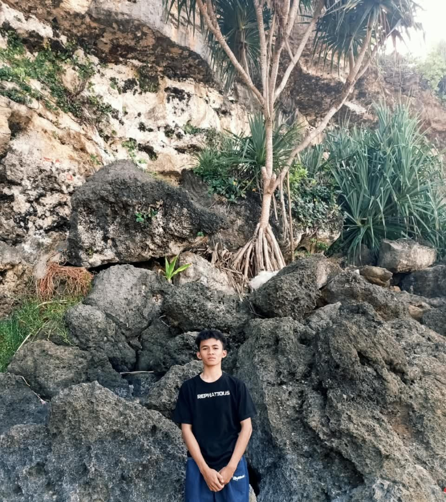

✧
Things you remember
Kamu masih ingat hal-hal kecil tentangku—bahkan beberapa yang sudah kulupakan sendiri. Aku nggak tahu bagaimana menjelaskannya, tapi itu membuatku tersentuh.
Untuk seseorang yang pernah menjadi bagian dari ceritaku, lalu kutemukan lagi dengan cara yang tak pernah kuduga.
Dulu, kita pernah saling mengenal begitu dekat. Kita punya cerita, tanggal-tanggal yang berarti, dan hal-hal kecil yang mungkin saat itu terasa biasa saja.
Lalu hidup membawa kita ke arah masing-masing. Kita menjadi asing, tidak saling menyapa, dan menjalani hari-hari tanpa tahu kabar satu sama lain.
Empat tahun bukan waktu yang sebentar. Banyak hal mungkin berubah, banyak cerita baru yang kita jalani. Aku bahkan sempat lupa beberapa hal tentangmu.
Tapi ternyata, kita bisa bertemu lagi. Bukan untuk berpura-pura bahwa masa lalu tidak pernah terjadi, melainkan untuk mengenal siapa kita sekarang—pelan-pelan, dari awal lagi.
Ada hal-hal kecil yang kelihatannya sederhana, tetapi ternyata bisa bertahan lama di ingatan.
Kamu masih ingat hal-hal kecil tentangku—bahkan beberapa yang sudah kulupakan sendiri. Aku nggak tahu bagaimana menjelaskannya, tapi itu membuatku tersentuh.
Pulang sekolah bersama, teleponan, video call, dan waktu sederhana yang sekarang terasa punya arti baru.
Kita tidak harus menjadi seperti dulu. Kita bisa saling mengenal lagi sebagai diri kita yang sekarang.
Bukan untuk mengulang semuanya, tetapi untuk melihat apa yang bisa kita bangun hari ini.
A sentence I want to keep close ♡
Hai, kamu.
Lucu, ya? Kita pernah sedekat itu, kemudian menjadi dua orang asing yang bahkan nggak saling menyapa selama bertahun-tahun. Kita melanjutkan hidup masing-masing, bertemu orang-orang baru, dan mungkin sempat berpikir bahwa cerita kita memang sudah selesai.
Tapi ternyata, kita bertemu lagi.
Aku nggak tahu bagaimana caranya menjelaskan perasaanku ketika menyadari bahwa kamu masih mengingat hal-hal kecil tentangku. Hal-hal yang bahkan sudah aku lupakan sendiri.
Aku ingin meminta maaf sekali lagi atas apa yang pernah terjadi di antara kita. Aku tahu ada rasa sakit yang pernah aku tinggalkan, dan aku nggak bisa memutar waktu untuk mengubah keputusan-keputusan yang dulu aku buat. Terima kasih karena sudah berdamai dengan masa lalu kita.
Aku nggak ingin kehadiranku sekarang membuatmu kembali mengingat hal-hal yang menyakitkan. Aku hanya ingin menghargai kesempatan yang kita punya hari ini.
Aku senang bisa mengenalmu lagi. Mendengar suaramu, menghabiskan waktu bersamamu, pulang sekolah bersama, dan melakukan hal-hal sederhana yang ternyata bisa membuat hari-hariku terasa berbeda.
Aku nggak tahu ke mana cerita ini akan membawa kita. Aku juga nggak ingin terburu-buru memberi nama pada sesuatu yang sedang kita jalani. Untuk sekarang, aku hanya ingin menikmati kesempatan untuk mengenalmu sekali lagi, kali ini dengan lebih baik.
Kalau suatu hari nanti kita kembali merasa asing, aku harap kita masih punya keberanian untuk saling menyapa. Kalau ternyata masih banyak hal yang belum kita ketahui tentang satu sama lain, mari kita pelajari perlahan-lahan.
Sebab, ternyata, mengenal seseorang untuk kedua kalinya bisa terasa seindah ini.
Terima kasih sudah menjadi bagian dari ceritaku, dulu dan sekarang.
And if life ever brings us back to this moment, I hope we'll remember that once, after all those years, we found each other again.
with all the things i couldn't say back then,
from someone who's grateful to know you again. ♡
Some memories deserve their own little place.

your photo goes here
foto1.jpgDari sekian banyak hal yang pernah datang dan pergi, ada kamu yang masih punya tempat tersendiri di cerita ini.
For now, I'm just glad our paths crossed again.